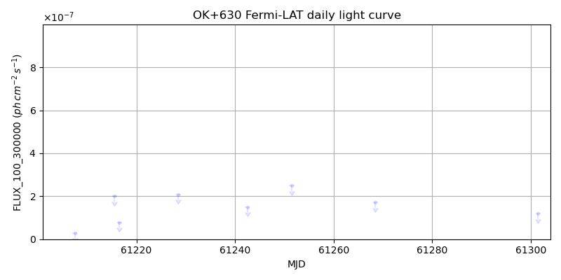
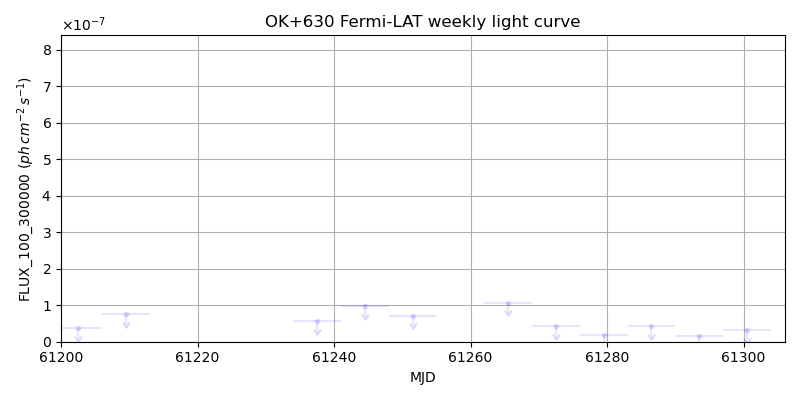
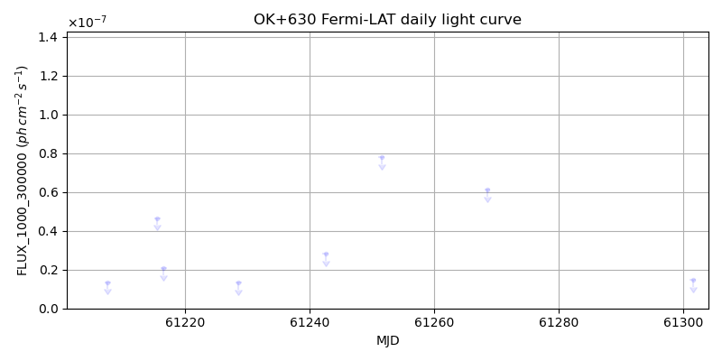
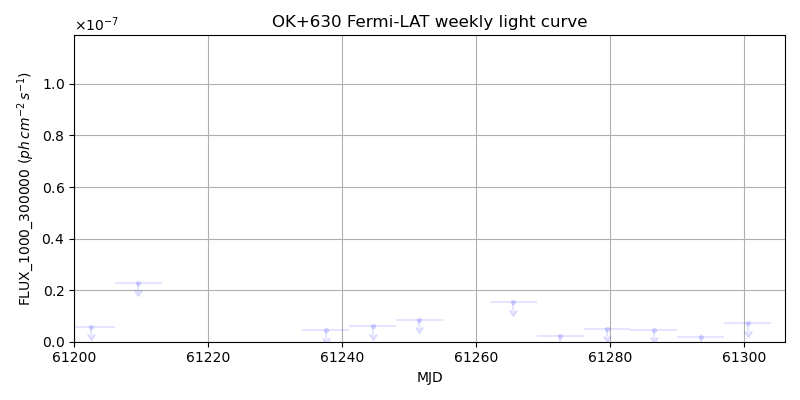

LAT Lightcurve site: https://fermi.gsfc.nasa.gov/ssc/data/access/lat/msl_lc/source/OK_p630
NED: Query
Time of last update of this page: UT: 2026-09-26 15:20 (MJD: 61309.639)
| Property | Value |
|---|---|
| R.A. | 9:21:36.24 |
| Dec. | 62:15:50.4 |
| z | 1.458 |
| 3FGL SpectrumType | |
| 3FGL PL Index | -1.00 |
| 3FGL Flux_100_300000 | -1.00e+00 |
| 3FGL Flux_1000_300000 | -1.00e+00 |
| 3FGL Flux >200 GeV | -1.00e+00 |
| 3FGL Extrap. Crab >200 GeV | -1.00 |
| 3FGL Flux After EBL Absorption >200GeV | -1.00e+00 |
| 3FGL EBL Crab Fraction >200GeV | -1.00 |

| MJD | dMJD | Flux | dFlux | Frac3FGL | FracCrab>200GeV | EBLFracCrab>200GeV |
|---|---|---|---|---|---|---|
| 61242.50 | 0.50 | 1.50e-07 | 0.00e+00 | 0.00 | 0.00 | -0.00 |
| 61251.50 | 0.50 | 2.49e-07 | 0.00e+00 | 0.00 | 0.00 | -0.00 |
| 61254.50 | 0.50 | 2.35e-06 | 0.00e+00 | 0.00 | 0.00 | -0.00 |
| 61268.50 | 0.50 | 1.71e-07 | 0.00e+00 | 0.00 | 0.00 | -0.00 |
| 61301.50 | 0.50 | 1.20e-07 | 0.00e+00 | 0.00 | 0.00 | -0.00 |

| MJD | dMJD | Flux | dFlux | Frac3FGL | FracCrab>200GeV | EBLFracCrab>200GeV |
|---|---|---|---|---|---|---|
| 61272.50 | 3.50 | 4.22e-08 | 0.00e+00 | 0.00 | 0.00 | -0.00 |
| 61279.50 | 3.50 | 1.87e-08 | 0.00e+00 | 0.00 | 0.00 | -0.00 |
| 61286.50 | 3.50 | 4.18e-08 | 0.00e+00 | 0.00 | 0.00 | -0.00 |
| 61293.50 | 3.50 | 1.48e-08 | 0.00e+00 | 0.00 | 0.00 | -0.00 |
| 61300.50 | 3.50 | 3.17e-08 | 0.00e+00 | 0.00 | 0.00 | -0.00 |

| MJD | dMJD | Flux | dFlux | Frac3FGL | FracCrab>200GeV | EBLFracCrab>200GeV |
|---|---|---|---|---|---|---|
| 61242.50 | 0.50 | 2.82e-08 | 0.00e+00 | 0.00 | 0.00 | -0.00 |
| 61251.50 | 0.50 | 7.79e-08 | 0.00e+00 | 0.00 | 0.00 | -0.00 |
| 61254.50 | 0.50 | 1.49e-07 | 0.00e+00 | 0.00 | 0.00 | -0.00 |
| 61268.50 | 0.50 | 6.11e-08 | 0.00e+00 | 0.00 | 0.00 | -0.00 |
| 61301.50 | 0.50 | 1.46e-08 | 0.00e+00 | 0.00 | 0.00 | -0.00 |

| MJD | dMJD | Flux | dFlux | Frac3FGL | FracCrab>200GeV | EBLFracCrab>200GeV |
|---|---|---|---|---|---|---|
| 61272.50 | 3.50 | 2.07e-09 | 0.00e+00 | 0.00 | 0.00 | -0.00 |
| 61279.50 | 3.50 | 5.09e-09 | 0.00e+00 | 0.00 | 0.00 | -0.00 |
| 61286.50 | 3.50 | 4.71e-09 | 0.00e+00 | 0.00 | 0.00 | -0.00 |
| 61293.50 | 3.50 | 1.86e-09 | 0.00e+00 | 0.00 | 0.00 | -0.00 |
| 61300.50 | 3.50 | 7.07e-09 | 0.00e+00 | 0.00 | 0.00 | -0.00 |
--------------------------------------------------------- Using user-supplied coords: 9:21:36.24 62:15:50.4 2000 --------------------------------------------------------- FLWO UT night of: 2026-09-27 Local Sid. @ Midnight: 00:00 Sunset (-15.0) (local, UT): 19:22 02:22 Sunrise (-15.0) (local, UT): 05:08 12:08 Moonrise (local, UT): Moonset (local, UT): Moon phase: 0.99 --------------------------------------------------------- AzTime LSID UT Obj_el Obj_az Mn_el Mn_az Sep. --------------------------------------------------------- 19:22 19:21 02:22 7.1 346.2 14.0 91.3 102.9 19:52 19:51 02:52 5.8 349.4 20.2 95.1 102.7 20:22 20:21 03:22 4.8 352.8 26.4 99.2 102.5 20:52 20:51 03:52 4.2 356.3 32.6 103.6 102.3 21:22 21:21 04:22 4.0 359.8 38.7 108.5 102.1 21:52 21:51 04:52 4.2 3.3 44.6 114.3 101.9 22:22 22:21 05:22 4.7 6.8 50.2 121.2 101.7 22:52 22:52 05:52 5.6 10.2 55.4 129.6 101.5 23:22 23:22 06:22 6.9 13.4 60.0 140.4 101.3 23:52 23:52 06:52 8.6 16.6 63.5 153.9 101.1 00:22 00:22 07:22 10.5 19.5 65.6 170.3 101.0 00:52 00:52 07:52 12.8 22.2 65.8 188.1 100.8 01:22 01:22 08:22 15.3 24.7 64.1 204.9 100.6 01:52 01:52 08:52 18.1 26.9 60.9 219.1 100.4 02:22 02:22 09:22 21.1 28.9 56.6 230.5 100.3 02:52 02:52 09:52 24.3 30.5 51.5 239.5 100.1 03:22 03:22 10:22 27.6 31.8 46.0 246.7 99.9 03:52 03:52 10:52 31.0 32.7 40.3 252.7 99.7 04:22 04:22 11:22 34.5 33.2 34.3 257.9 99.5 04:52 04:52 11:52 38.0 33.2 28.2 262.5 99.4 05:08 05:09 12:08 40.0 33.0 24.8 264.9 99.3 --------------------------------------------------------- Moon up all night, no dark time. Dark hours >55 deg.: 0.00